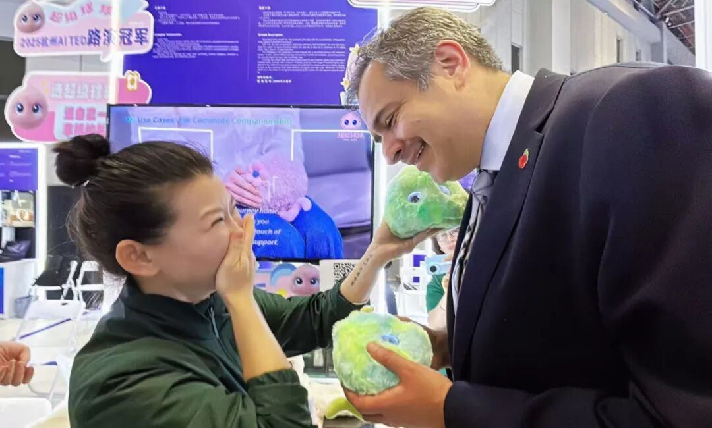
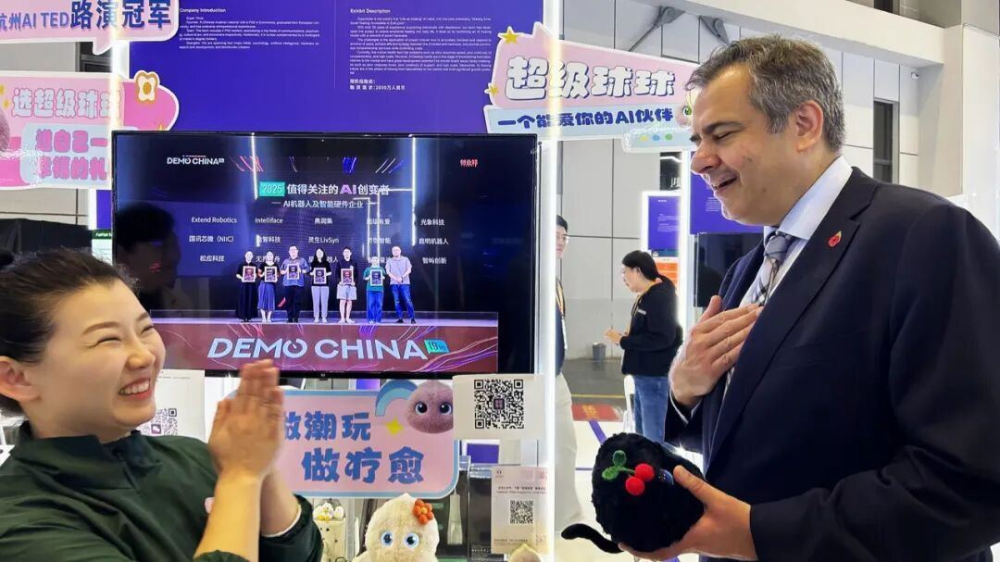
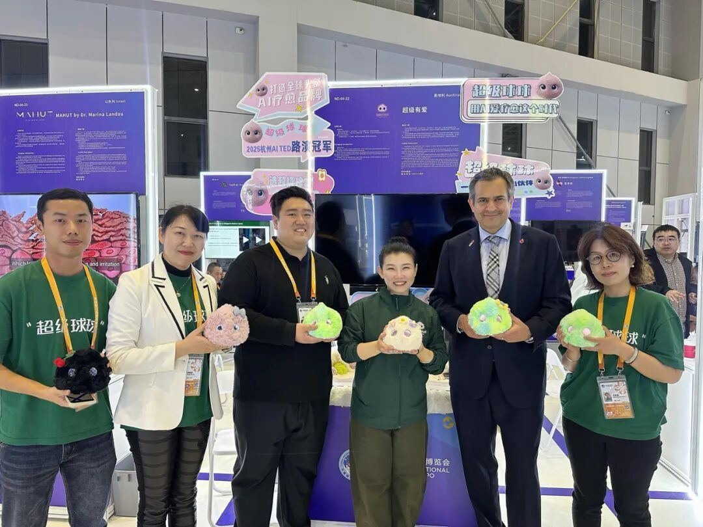

元晓帅博⼠笑着解释说：“我们主要是⾯向这个群体做的研发，但在实际的调研测试中发现，⻘少年等群体对球球也⾮常喜爱。实际上，球球的对话能⼒很强，全年龄段的⽤⼾都可以与球球交流，毕竟，⼈类在情绪和⼼理的底层需求上，是共通的。这正是超级球球⾃研AI情绪疗愈模组的优势。”
听完元博⼠的介绍后，施睿耀先⽣好奇地拿起超级球球，感受它柔软的⽑绒外观，并询问球球是否会英语。
“BoBo，could you introduce yourself in English？”元晓帅博⼠让球球⽤英语介绍⾃⼰。
“Sure！My name is Super BoBo……”球球⽴刻⽤萌萌的童声开始了⾃我介绍，当听到球球说，可以帮助⼈们赶跑坏⼼情时，施睿耀先⽣笑着说：“Everyone needs Bobo！”（“每个⼈都需要超级球球！”）

英国驻华贸易副使节施睿耀（Sohail Shaikh，右⼆）、亿极中国总裁陆城宽（左三）与超级球球进博会团队合影
